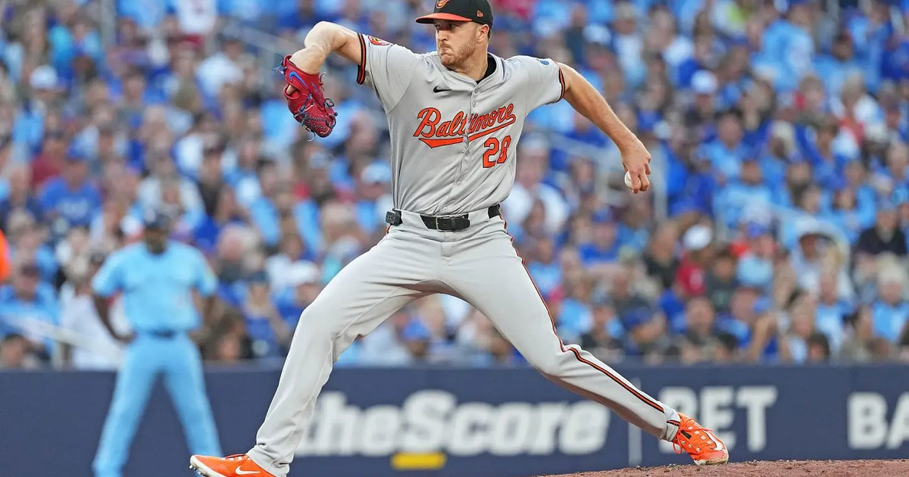

Cubs land Trevor Rogers on five years, $120 million — the pivot after losing Skubal
The Cubs missed on Tarik Skubal, then moved fast: left-hander Trevor Rogers is headed to Chicago on the winter's second-biggest pitching deal, pending a physical.

Disclosure: this post contains affiliate links. I earn a commission on qualifying purchases.
The move
The Cubs did not sulk after losing Tarik Skubal. They pivoted — fast.
Chicago agreed to a deal with free agent left-hander Trevor Rogers on Monday night, MLB Network's Jon Morosi first reported. Ken Rosenthal of The Athletic reported the terms, and Jeff Passan of ESPN confirmed the guarantee: five years, with deferrals that bring down the net present value. The agreement is pending a physical.
Rogers rejected a $23.15 million qualifying offer from the Orioles earlier this month, so the signing costs Chicago draft capital on top of the contract: the Cubs forfeit their second- and fifth-highest picks in the 2027 draft, plus $1 million in international signing pool money.
The player
Rogers is 29 and coming off a full season as a rotation anchor. He made 30 starts for Baltimore in 2026, going 10-11 with a 4.03 ERA over 169⅔ innings — but the peripherals were better than the ERA: a 3.45 FIP, a 5.6% walk rate and a 22.5% strikeout rate. He leans on a five-pitch mix led by a low-to-mid-90s four-seamer, with a changeup, sweeper, sinker and cutter behind it.
The year before was the breakout. Rogers went 9-3 with a 1.81 ERA in 2025 and was voted the Orioles' most valuable player — a stunning turnaround for a pitcher Baltimore acquired from Miami in a 2024 trade that was panned at the time. Since returning to the majors for good last June, he has thrown 273 innings of 3.23 ERA ball.
MLB Trade Rumors called him arguably the second-best pitcher available this offseason, and the market agreed: with Skubal off the board, Rogers was the next arm every contender wanted.
The fit
Chicago needed this. The Cubs watched Skubal sign with the Mets on Sunday for nine years and $450 million — the richest pitcher contract in baseball history — and the rotation had a hole at the top that was not going to fill itself. Rogers slots in as a mid-rotation starter with top-of-the-rotation upside if the 2025 version is real, and at 29, the five-year commitment buys his age-30 through age-34 seasons.
The timing matters too. The collective bargaining agreement expires Dec. 1, with a lockout expected to follow, so teams are racing to get business done before the market freezes. The Cubs got their starter with eight days to spare.
What it means
This is the winter's second-biggest pitching deal, and it tells you where the market is: even the runner-up prize costs nine figures now. Rogers is not Skubal — nobody is — but he is durable, he misses bats without walking anybody, and his last two seasons say the 2025 breakout was not a fluke.
For the Cubs, it is a statement that losing the Skubal sweepstakes did not end their offseason. For the Orioles, it is a hole in the rotation and a reminder that the qualifying offer only buys you draft picks, not the player. And for Rogers, it is life-changing money for a pitcher who, two summers ago, looked like a change-of-scenery reclamation project.
Sources
• Reports: Cubs agree to 5-year, $120M deal with LHP Trevor Rogers (Reuters)
• Report: Free agent Trevor Rogers, Chicago Cubs reach five-year deal (TSN/ESPN)
• Cubs signing Trevor Rogers to five year, $120 million contract (New York Post)
• BREAKING: Trevor Rogers Signs with the Chicago Cubs (Bleacher Nation)
• Ace pitcher wins 2025 Most Valuable Orioles player award (Sports Illustrated)
Gear up: Fanatics